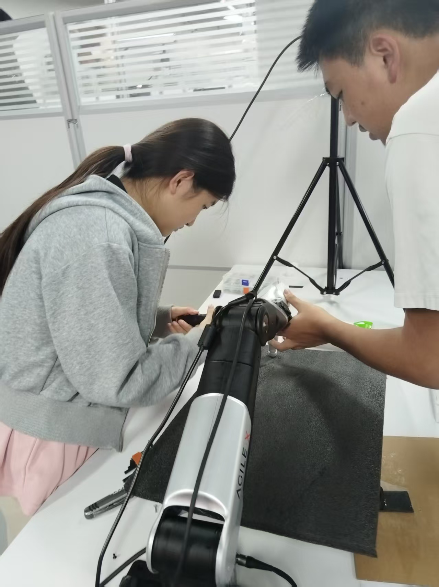
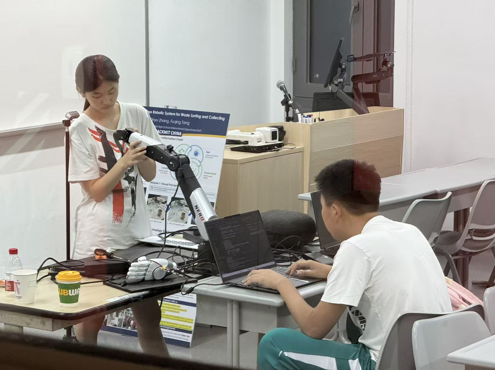
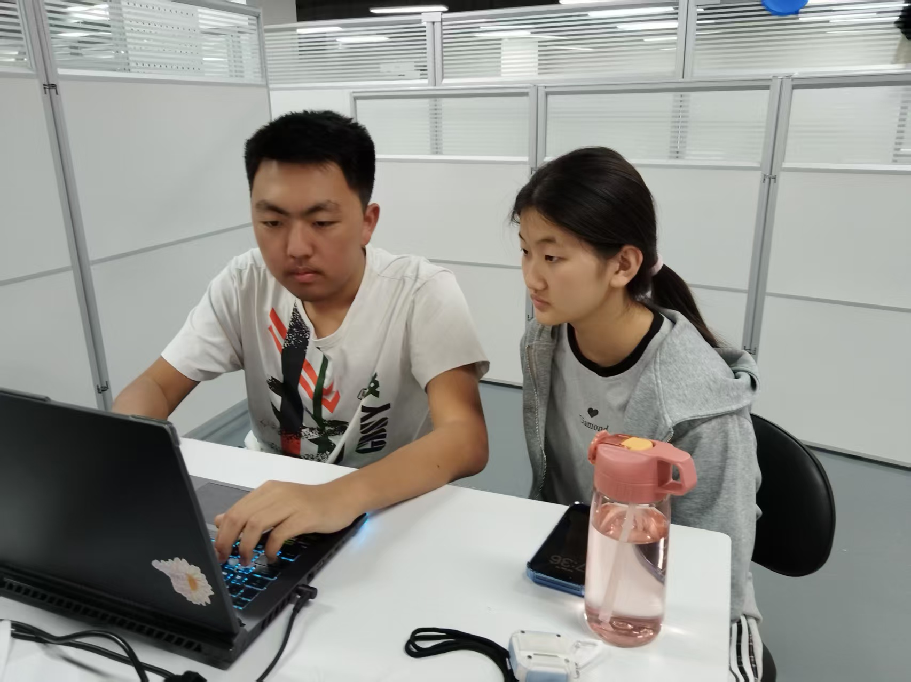

Installing the dexterous hand
This moment marks the transition from arm-only motion to a system capable of physical grasp execution.

An AI-powered robotic sorting system for bottles and cups. It combines YOLO11 perception, RGB-D depth estimation, coordinate transformation, seek-and-follow arm control, and dexterous grasping into a full pick-move-release prototype.
The system combines perception and manipulation into a focused workflow for bottle and cup sorting.
These photos show the project as it was actually built: hardware assembly, control development, and close team coordination around the robot.
This moment marks the transition from arm-only motion to a system capable of physical grasp execution.

This coding session shows the software side of the project, where perception outputs were turned into robot commands and interface logic.

This collaboration snapshot reflects the day-to-day work needed to debug hardware, tune perception, and prepare the final demo.

Plastic bottles and cups are everywhere in recycling streams, but separating them still depends on repetitive and often unpleasant human work. RecycBot reframes the project around a sharper goal: showing that a compact robot can identify, localize, grasp, and sort common plastic waste credibly.
Lighting, clutter, reflective plastic, and object deformation make bottle and cup sorting harder than a clean tabletop vision demo.
A bounding box only matters if it becomes a trustworthy 3D target and then a stable robot command in the correct frame.
Grasp force, hand synchronization, and motion safety have to be tuned with restraint or the whole pipeline becomes fragile fast.
The robotic loop moves from RGB-D sensing to detection, localization, and physical sorting.
Capture RGB-D visual data from the D435i so the robot has both appearance and depth cues before it moves.
Use an improved YOLO11 model to identify bottles and cups with real-time labels and candidate grasp targets.
Convert visual detections into physical robot coordinates so the arm can align itself above the object reliably.
Run seek-and-follow movement, adapt hand approach, then complete a categorized pick-move-release cycle.
The prototype combines real-time detection, coordinate transformation, arm alignment, and dexterous pick-and-place behavior into one coherent system.
RealSense capture and improved YOLO11 inference give the system live object identity and position cues.
2D pixels become 3D robot-space targets, which is the bridge between computer vision and physical action.
The arm tracks target position continuously and keeps an intended offset while object height changes.
A dexterous hand with force-aware control grips the object and places it into the proper category bin.
From sensor input to robot action, each layer contributes to the full sorting pipeline.
RGB-D acquisition
Detection + labels
3D point extraction
Coordinate transform
Safe task commands
Status + control
The build progressed from sensor bring-up to calibration, grasp tuning, and demo integration.
Stream live RGB-D data and confirm that YOLO11 can detect bottles and cups consistently in the real workspace.
Translate visual coordinates into robot-space targets and make sure the arm can move above the detected object accurately.
Integrate the dexterous hand, calibrate force, and reduce grasp failures caused by depth noise or object deformation.
Turn the full stack into something legible for judges by exposing the system story, outputs, and demo flow clearly.
Featured footage from the prototype shows target detection, arm following, dexterous grasping, and categorized placement.
Staged validation matters because safe iteration is one of the strongest signs of serious robotics engineering.
Coordinate transformation is essential because accurate robot motion depends on stable alignment between camera and arm.
The website presents system behavior, technical context, and demo evidence for judges and collaborators.
Safety is built into the prototype through workspace limits, motion constraints, and supervised operation.
Approach limits help the arm stay above the object until localization and following have stabilized.
Known-safe regions and designated bins stop visually plausible but physically unsafe commands from becoming live motion.
Human supervision remains part of the loop because grasp force, connectivity, and hardware timing still matter in live demos.
The project reads better when validated work and planned upgrades are separated explicitly instead of blended together.
Keep improving grasp reliability and repeatability as the hardware and control policy stabilize.
Push beyond simple center-point targeting toward richer geometry and more precise approach planning.
Expand beyond bottles and cups to cans, cartons, and additional recyclable waste categories.
Keep moving toward edge-device deployment, longer autonomous cycles, and broader physical intelligence capabilities.
Documentation, interface integration, and communication reliability
Model integration, robot coordinates, and arm-hand integration
Guiding instructors who supported the project direction, system thinking, and technical development during the build.